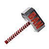
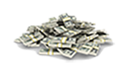
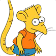

Twitch es una plataforma que ofrece un servicio de streaming de video en vivo.
Principalmente se enfoca a los videojuegos, incluyendo "playthroughs" de juegos jugador por usuarios, transmision de eSports, y otros eventos relacionados con los videojuegos
El contenido del sitio puede ser visto en vivo o bajo demanda.
Podemos dividir Twitch en 5 tipos de usuarios:
- Streamer: Es la persona que se dedica a crear contenido dentro de Twitch y transmite en vivo.
- Moderador: Es el encargado de mantener un orden en el chat y apoyar al streamer en algunas tareas.
 - Suscriptor: Es el que apoya al streamer monetariamente, paga una couta mensual para tener ciertos beneficios dentro del canal y a su vez con eso apoya al streamer. 
- Follower: Es el usuario que sigue al streamer, disfruta de sus directos pero no se encuentra suscrito al
canal.
- Viewer: Es un usuario normal que solo pasa momentaneamente al canal.
